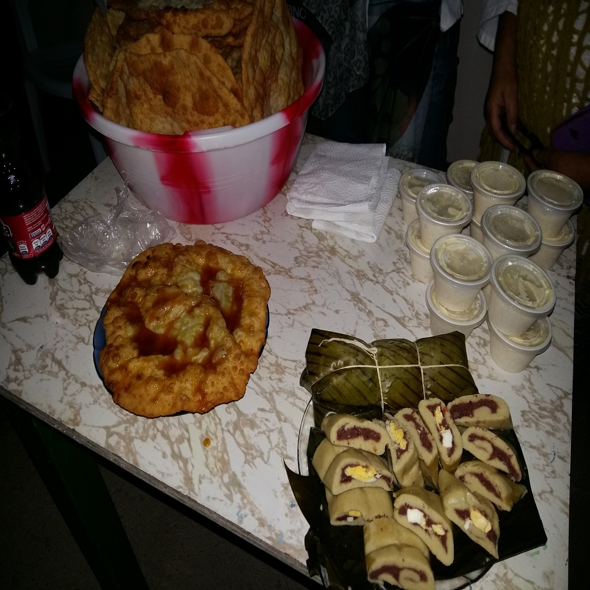
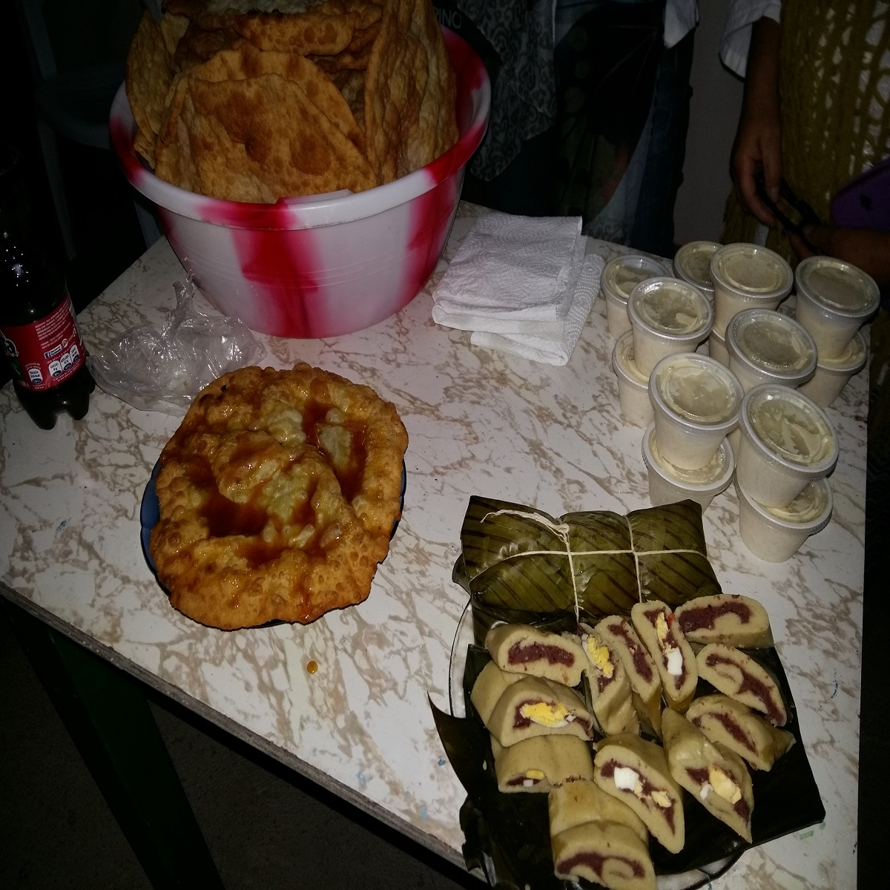

Conoce nuestros paisajes naturales
Te prometemos los vas a amar!
Te prometemos los vas a amar!
En COOPEBAJOS DEL TORO R.L. le ofrecemos el tour a Catarata Rio Agrio, propiedad del señor José Luis Mora, teniendo la oportunidad de hacer el recorrido por la orilla del rio o por medio del sendero apto para toda su familia. Permitido el ingreso de mascotas. Puede contar con parqueo seguro (no se encuentra bajo techo) Puede contar con servicios sanitarios y duchas.


En COOPEBAJOS DEL TORO R.L. le ofrecemos el tour a pozas las mellizas y Catarata caída del cielo en donde encontrara una poza de agua celeste la cual lleva a una caída de 20 metros, esto formando otra poza en la que puede disfrutar de un baño de agua fría. Además a lo largo del camino podrá deleitarse de la maravillosa vista natural, rio de agua con coloración celeste y con la imprencionante vista del cerro pelón “Volcán Poas”.


Contamos con unas excelentes recetas. Venga y disfrute de este arte culinario al mejor estilo casero.


 

Conoce un poco de lo que te puedes encontrar.